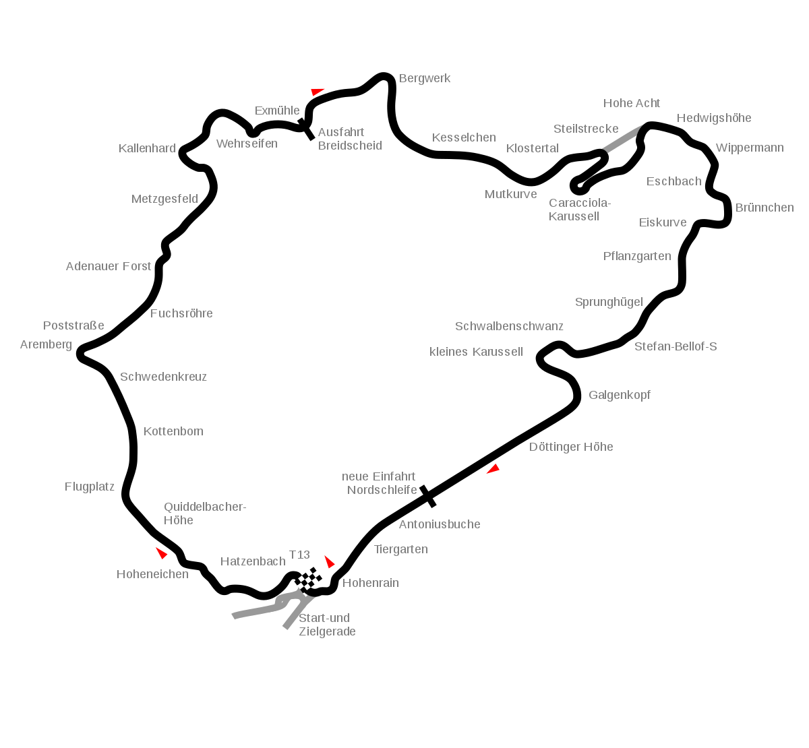

Red Bull Ring
| Red Bull Ring es un autodromo ubicado en la villa de Spielberg, cerca al poblado de Zeltweg, estado de Estiria, Austria, a unos 50 km al oeste de la ciudad de Graz. Ha recibido varios de los principales campeonatos mundiales y europeos de deporte motor. El nombre original del circuito fue Osterreichring, que traducido seria "circuito de Austria". Despues de su remodelacion en 1996, fue renombrado a A1-Ring debido al patrocinio de la telefonica A1 Mobilkom.? En 2010, el fabricante de bebidas Red Bull GmbH adquirio el circuito y le puso el nombre actual. |  |
Hungaroring
| Hungaroring es un autódromo localizado en Mogyoród, Hungría, a 30 kilómetros del centro de la ciudad de Budapest. La construcción del circuito empezó el 1 de octubre de 1985 y fue terminado en ocho meses. El trazado actual tiene una longitud de 4.381 metros; las rectas más cortas que las de otros circuitos semejantes hacen que los adelantamientos en carrera no sean frecuentes. |  |
Silverstone
| El Circuito de Silverstone es un autódromo localizado en Silverstone, Inglaterra, Reino Unido, unos 20 km al sur de Northampton y 25 km al oeste de Milton Keynes. Parte del autódromo se halla en Northamptonshire y la restante en Buckinghamshire. Es uno de los circuitos más prestigiosos de Europa, al haber albergado el Gran Premio de Gran Bretaña de Fórmula 1, los 1000 km de Silverstone del Campeonato Mundial de Resistencia, y el Gran Premio de Gran Bretaña de Motociclismo del Campeonato Mundial de Motociclismo, entre otras pruebas internacionales. |  |
Catalunya
| El Circuito de Barcelona-Cataluña (en catalán y oficialmente, Circuit de Barcelona-Catalunya), también conocido como Circuito de Montmeló o Circuito de Barcelona, es un autódromo situado en las poblaciones de Montmeló (sectores 1 y 2) y Granollers (sector 3), en la provincia de Barcelona, comunidad autónoma de Cataluña, España. |  |
SPA-Francorchamps
| El Circuito de Spa-Francorchamps (en francés Circuit de Spa-Francorchamps) es un circuito de carreras situado cerca de las localidades de Spa, Francorchamps, Malmedy y Stavelot en la provincia de Lieja, Bélgica. Es el circuito más importante del país, y tanto pilotos como seguidores de las diversas disciplinas de automovilismo de velocidad suelen mostrar su preferencia por él. |  |
Monza
| El Autodromo Nazionale di Monza es un autódromo situado en el parque de la villa real de Monza en las cercanías de Monza, región de Lombardía, Italia, unos 20 km al norte de la ciudad de Milán. El autódromo consta de tres pistas: el trazado de 5.793 metros usado para los Grandes Premios, la pista Junior que se extiende a lo largo de 2.405 metros, y un circuito peraltado de velocidad de 4.250 metros hoy en desuso. |  |
Mugello
| El Autódromo Internacional del Mugello es un autódromo situado en la provincia de Florencia, región de Toscana, Italia,1? unos 30 km al norte de la ciudad de Florencia. El circuito se inauguró en 1974 y su trazado largo tiene 5.245 kilómetros de longitud, cuyo récord de vuelta de 1'15.144 lo marcó Lewis Hamilton al volante de un Mercedes de Fórmula 1 del año 2020. |  |
Sochi
| El Autódromo de Sochi, (Ruso: ???? ????????) anteriormente denominado Circuito del Parque Olímpico de Sochi es un circuito de carreras de Fórmula 1 de 5,8km construido en el Parque Olímpico del balneario de Sochi, Krai de Krasnodar, Rusia. |  |
Nurburgning
| Nurburgring es un autódromo ubicado alrededor del pueblo de Nürburg, estado de Renania-Palatinado, Alemania.1? Se encuentra en las montañas Eifel, unos 60 km al oeste de la ciudad de Coblenza.2?El Nordschleife junto con el GP-STRECKE es el circuito más largo con unos 25 km |  |
Portimao
| El Autodromo Internacional do Algarve es un autódromo situado en Portimão, región de Algarve, Portugal. Se acabó de construir en octubre de 2008, con un coste de 195 millones de euros y fue inaugurado el 2 de noviembre de ese año coincidiendo con la celebración de la carrera final del Campeonato Mundial de Superbikes. |  |
Imola
| El Autodromo Enzo e Dino Ferrari es un autódromo de 4,9 km situado en Imola, región de Emilia-Romaña, Italia, unos 30 km al sureste de la ciudad de Bolonia. Es uno de los principales de su país, habiendo albergado carreras de numerosos campeonatos mundiales y europeos de automovilismo de velocidad y motociclismo de velocidad además de italianos. |  |
Istanbul Park
| El Circuito de Estambul, también conocido como Autódromo de Estambul o Parque de Estambul (en turco, Intercity Istanbul Park), es un autódromo localizado en el lado asiático de Estambul, Turquía.1? Fue construido para ser sede del Gran Premio de Turquía de Fórmula 1, que se disputó desde 2005 hasta 2011, con la GP2 y la GP3 Series como soporte. Hará su regreso a la categoría en 2020. | , más conocido como Sakhir, es un autódromo localizado en la ciudad de Manama, Baréin, sede actual del Gran Premio de Baréin de Fórmula 1.</td>
<td><img src=) |
Yas Marina
| El Circuito Yas Marina es un circuito de carreras que se construyó en la Isla Yas, emirato de Abu Dabi, Emiratos Árabes Unidos para celebrar el Gran Premio de Abu Dabi de Fórmula 1 desde el año 2009. La pista también ha albergado carreras del Campeonato Mundial de GT1 y el V8 Supercars, así como las 12 Horas del Golfo. |  |